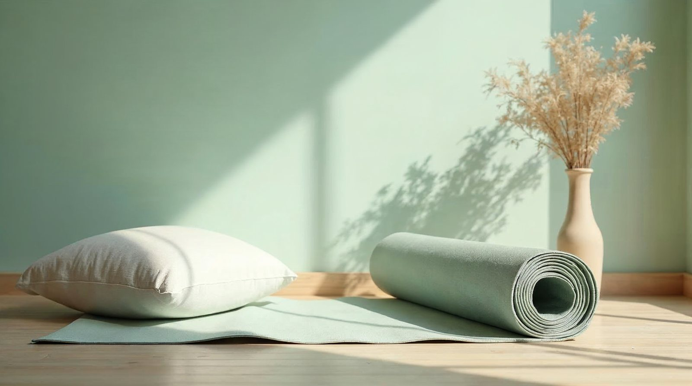

이종호 한의사 감수좋은꿈참사랑한의원 대표원장 (한의사 면허번호 19769)발행 2026-11-26 · 수정 2026-11-26
이 글의 차례
회의가 길어질수록 아랫배가 묵직하게 차오릅니다. 화장실에 다녀온 지 한 시간도 안 됐는데 다시 가고 싶고, 참으면 방광 쪽이 콕콕 쑤십니다. 소변을 보고 나면 잠시 편해지지만 금세 다시 같은 느낌이 돌아옵니다. 방광염인 줄 알고 약을 먹어 봐도 이번에는 이상하게 듣지 않습니다.
병원에서 소변 검사를 했는데 균이 나오지 않는다는 말을 들었습니다. 염증이 없다는데 왜 이렇게 아픈지, 진료실에서 이 질문을 들고 오시는 분들의 얼굴에는 오랜 피로가 묻어 있습니다. 밤에도 몇 번씩 깨다 보니 잠도, 일도, 외출도 점점 조심스러워졌다고 하십니다.
이렇게 균에 의한 감염이 없는데도 방광 주변 통증과 잦은 소변이 오래 이어지는 상태를 간질성 방광염, 또는 방광통증증후군이라고 부릅니다. 이름은 낯설지만 생각보다 드물지 않고, 여성분에게 더 흔하며 남성분에게도 생길 수 있습니다.
이 글에서는 간질성 방광염이 어떤 상태인지, 일반 방광염과 어떻게 다른지, 음식과 방광 습관은 어떻게 살피는지, 그리고 비뇨의학과 치료와 함께 한의원에서 살필 수 있는 부분을 정리해 보겠습니다.
간질성 방광염은 어떤 상태인가요
방광은 소변을 모아 두었다가 내보내는 주머니입니다. 보통은 소변이 어느 정도 차야 마렵다는 신호가 오고, 조금 참을 수 있습니다. 간질성 방광염에서는 소변이 조금만 차도 방광이 아프거나 압박감이 들고, 그 불편 때문에 화장실을 자주 찾게 됩니다.
통증의 자리는 아랫배 한가운데, 치골 위, 요도, 질 주변이나 회음부, 허리 아래까지 다양합니다. 소변을 보고 나면 잠시 줄었다가 방광이 다시 차면서 커지는 모양이 많습니다. 생리 전이나 특정 음식을 먹은 뒤, 긴장한 날에 심해지기도 합니다.
진단은 비뇨의학과에서 다른 원인을 하나씩 확인한 뒤 내려지는 경우가 많습니다. 감염, 결석, 방광의 다른 병, 부인과 질환 등을 먼저 살펴보고, 그래도 설명되지 않는 통증과 잦은 소변이 몇 달 이상 이어질 때 이 이름을 붙입니다.
일반 방광염과는 어떻게 다른가요
일반 방광염은 균이 방광에 들어가 생기는 감염입니다. 소변 볼 때 따갑고, 소변이 탁하거나 냄새가 나며, 소변 검사에서 균과 염증 세포가 보입니다. 항생제를 먹으면 며칠 안에 가라앉는 경우가 많습니다.
간질성 방광염은 소변 검사가 깨끗한데도 증상이 이어지고, 항생제를 먹어도 크게 달라지지 않습니다. 소변 볼 때 따가움보다 방광이 차오를 때의 통증과 압박감이 중심입니다. 다만 두 가지가 겹쳐 오는 경우도 있어, 증상이 갑자기 달라지면 소변 검사를 다시 받아 보시길 권합니다.
과민성 방광과도 헷갈리기 쉽습니다. 과민성 방광은 갑자기 참기 어려운 요의가 중심이고, 통증은 크지 않은 편입니다. 간질성 방광염은 요의와 함께 아픔이 뚜렷하다는 점이 다릅니다.
왜 간질성 방광염이 생길까요
아직 한 가지 원인으로 설명되지는 않습니다. 방광 안쪽을 덮어 소변의 자극을 막아 주는 얇은 보호막이 약해져, 소변 속 성분이 방광 벽을 자극한다는 설명이 있습니다. 방광 주변 신경이 예민해져 작은 자극도 통증으로 크게 느끼게 된다는 설명도 함께 거론됩니다.
골반 바닥 근육의 긴장도 큰 몫을 합니다. 통증이 오래 이어지면 몸은 저절로 아랫배와 골반 근육에 힘을 주게 되고, 굳은 근육이 다시 방광과 요도 주변을 누르며 통증을 키웁니다. 소변을 오래 참거나, 반대로 너무 자주 미리 보는 습관도 방광을 더 예민하게 만들 수 있습니다.
잠 부족과 긴장, 피로가 쌓인 시기에 증상이 심해진다는 분이 많습니다. 과민성 장이나 섬유근육통, 편두통처럼 몸의 예민함과 관련된 다른 불편이 함께 있는 경우도 적지 않아, 몸 전체의 흐름을 같이 보는 것이 중요합니다.
증상을 흔드는 것들, 이렇게 나눠 봅니다
음식과 음료
커피와 진한 차, 탄산음료, 술, 매운 음식, 신 과일과 과일 주스, 인공 감미료가 들어간 음료를 드신 뒤 심해진다는 분이 많습니다. 다만 사람마다 반응하는 음식이 달라, 일률적으로 모두 끊기보다 내 몸에 맞는 목록을 찾는 것이 좋습니다.
생리 주기
생리 직전에 통증과 잦은 소변이 심해지는 분이 많습니다. 주기를 기록해 두면 미리 대비할 수 있고, 생리통과 겹치는 통증인지 나누어 보는 데도 도움이 됩니다.
긴장과 피로
바쁜 일정, 잠 부족, 감정적으로 힘든 일이 있을 때 증상이 함께 커집니다. 반대로 마음이 편한 휴가 중에는 덜하다는 분도 계십니다. 몸과 마음이 이어져 있다는 것을 보여 주는 대목입니다.
오래 앉기와 찬 기운
딱딱하고 찬 의자에 오래 앉아 있거나, 아랫배와 엉덩이가 차가워진 날 불편이 커진다는 분이 많습니다. 꽉 끼는 바지와 속옷도 골반 주변을 압박할 수 있습니다.
스스로 점검해 보세요
- 소변이 조금만 차도 아랫배나 방광 쪽이 아프거나 묵직한가요?
- 소변을 보고 나면 잠시 편해지나요?
- 소변 검사에서 균이 나오지 않았나요?
- 항생제를 먹어도 크게 달라지지 않았나요?
- 특정 음식이나 음료 뒤에 심해지나요?
- 생리 전이나 긴장한 날에 더 심한가요?
- 밤에 소변 때문에 두 번 이상 깨나요?
여러 개가 해당된다면 비뇨의학과에서 정확한 진단을 받아 보시길 권합니다. 이미 진단을 받으셨다면 이 목록은 내 증상이 무엇에 흔들리는지 알아보는 데 쓰시면 됩니다.
먼저 이렇게 여쭙니다
- 언제부터 시작되었고, 어떤 검사를 받으셨나요?
- 하루 소변 횟수와 밤에 깨는 횟수는 어떤가요?
- 통증은 어디가, 어떤 느낌으로 아픈가요?
- 증상이 심해지는 음식이나 상황이 있나요?
- 생리 주기와는 어떤 관계가 있나요?
- 요즘 잠과 마음의 부담은 어떠신가요?
- 지금 드시는 약이나 받는 치료가 있나요?
일상에서 먼저 해 볼 수 있는 것
먼저 배뇨 일지를 써 보세요. 사흘 정도 마신 것의 종류와 양, 소변을 본 시각과 양, 통증의 세기를 적으면 무엇이 증상을 흔드는지 보이기 시작합니다. 이 기록은 비뇨의학과와 한의원 모두에서 큰 도움이 됩니다.
음식은 의심되는 것을 하나씩 확인합니다. 커피나 탄산음료처럼 흔히 거론되는 것을 이 주 정도 쉬어 보고, 몸이 편해졌다면 다시 조금씩 드셔 보며 반응을 봅니다. 한꺼번에 많은 음식을 끊으면 오히려 식사가 힘들어지니 하나씩 차근차근 하시길 권합니다.
물은 너무 적게도, 너무 많게도 드시지 않는 것이 좋습니다. 소변을 줄이려고 물을 참으면 소변이 진해져 방광을 더 자극할 수 있습니다. 하루 동안 나눠 조금씩 드시고, 잠들기 두세 시간 전부터는 양을 줄여 밤에 깨는 횟수를 살펴보세요.
방광 훈련도 천천히 시도해 볼 수 있습니다. 마렵다는 느낌이 오자마자 가지 말고, 숨을 내쉬며 몇 분만 기다렸다 가는 연습입니다. 처음에는 아주 짧게 시작해 며칠에 걸쳐 조금씩 늘립니다. 통증이 심한 날에는 억지로 참지 않습니다.
아랫배와 엉덩이를 따뜻하게 두고, 딱딱한 의자에는 방석을 깔아 주세요. 꽉 끼는 바지보다 넉넉한 옷이 편합니다. 따뜻한 물로 좌욕을 하거나 아랫배에 찜질팩을 옷 위로 대 주면 골반 근육이 풀려 편하다는 분이 많습니다.
밤에 자주 깰 때
밤에 소변 때문에 여러 번 깨면 잠이 조각나고, 잠이 모자라면 다음 날 통증을 더 예민하게 느끼게 됩니다. 저녁 식사 뒤에는 국물과 과일, 음료의 양을 조금 줄이고, 잠들기 직전에 소변을 한 번 보고 눕는 습관을 들여 보세요.
침실은 너무 춥지 않게 두고, 배와 엉덩이를 덮는 잠옷을 입으시길 권합니다. 깼을 때 휴대폰을 보지 말고 조명을 낮게 둔 채 화장실만 다녀오면 다시 잠들기가 수월합니다. 밤에 깨는 횟수를 적어 두면 변화가 눈에 보여 마음도 덜 조급해집니다.
외출과 여행을 준비할 때
긴 이동이 있는 날에는 출발 전에 커피와 탄산음료를 피하고, 물은 조금씩 나눠 마십니다. 이동 경로의 화장실 위치를 미리 확인해 두면 그것만으로도 긴장이 줄어 방광이 덜 예민해지는 경험을 하시는 분이 많습니다.
여행지에서는 평소 먹지 않던 음식과 술이 늘기 쉽습니다. 증상을 흔드는 음식 목록을 미리 메모해 두고, 낯선 음식은 조금씩 맛보는 정도로 즐기세요. 따뜻한 겉옷과 작은 방석을 챙기면 찬 의자에 앉을 때도 도움이 됩니다.

골반 근육을 풀어 주는 숨
통증이 오래 이어지면 아랫배와 골반 바닥에 저도 모르게 힘이 들어갑니다. 편히 누워 무릎을 세우고, 숨을 들이쉴 때 배와 골반 아래가 부드럽게 내려가는 느낌, 내쉴 때 제자리로 돌아오는 느낌을 따라가 보세요.
이때 항문과 회음부를 조이는 운동은 오히려 근육을 더 긴장시킬 수 있어 조심합니다. 조이는 것보다 풀어 내리는 쪽에 마음을 두는 것이 이 숨 연습의 요령입니다. 비뇨의학과나 재활 쪽에서 골반 바닥 치료를 안내받으셨다면 그 방법을 우선해 주세요.
가족과 직장에 설명하기
겉으로 드러나지 않는 불편이라 주변에서 이해받기 어렵다는 분이 많습니다. 회의 중에 자주 자리를 비우거나 긴 외출을 피하게 되면 오해를 사기도 합니다. 가까운 사람에게는 방광이 예민해져 조금만 차도 아프다는 정도로 짧게 설명해 두시길 권합니다.
직장에서는 화장실과 가까운 자리, 회의 중간의 짧은 휴식처럼 작은 배려만으로도 부담이 크게 줄어듭니다. 설명이 어렵다면 진료 내용을 간단히 적은 메모를 함께 준비하셔도 좋습니다. 혼자 숨기며 버티는 긴장이 오히려 증상을 키우기도 합니다.
한의원에서 함께 살필 수 있는 경우
비뇨의학과에서 진단과 치료 방향을 확인한 뒤라면 한의원에서도 함께 살필 수 있습니다. 진찰을 마친 뒤 그때의 상태에 맞춰 방법을 고르며, 모든 분께 같은 치료를 드리지는 않습니다.
- 아랫배와 골반, 허리 아래 근육이 늘 굳어 있고 눌러 아픈 경우
- 아랫배와 손발이 차고 차가워지면 증상이 심해지는 경우
- 잠을 설치고 긴장이 쌓이면 통증과 잦은 소변이 함께 커지는 경우
- 오래 이어진 불편으로 몸 전체가 지치고 기운이 떨어진 경우
굳은 허리와 골반 주변은 침이나 약침으로 살피고, 숨과 자세, 방광 습관을 진료실에서 함께 정리합니다. 몸이 차고 지친 모습이 함께 있다면 필요하다고 판단되면 한약을 고려합니다. 한약은 지금 드시는 약을 모두 확인한 뒤 신중하게 정합니다.
비뇨의학과에서 처방받은 약이나 방광 안에 넣는 치료를 받고 계신다면 임의로 멈추지 마시고 그대로 이어 가 주세요. 한의원 진료는 그 치료와 함께 가는 것입니다. 임신 중이시라면 처음에 먼저 알려 주시고 산부인과 선생님과도 상의해 주세요.
이렇게 기록해 오시면 상담이 쉬워집니다
- 사흘 동안의 배뇨 일지(시각, 양, 통증 세기)
- 마신 음료와 먹은 음식 가운데 의심되는 것
- 생리 시작일과 그 전후의 증상 변화
- 밤에 깬 횟수와 그날의 잠
- 받은 검사와 지금 드시는 약의 이름
배뇨 일지는 처음 한 번, 그리고 생활을 바꿔 본 뒤 한 번 더 적어 오시면 비교가 쉽습니다. 숫자가 조금씩 달라지는 것을 직접 보시면 다음 걸음을 정하는 데 힘이 됩니다.
오래가는 불편과 함께 지내는 법
간질성 방광염은 좋아졌다 나빠졌다를 반복하는 경우가 많습니다. 심한 날이 오면 그동안의 노력이 소용없었던 것처럼 느껴지기 쉽지만, 기록을 보면 편한 날이 조금씩 늘어나고 있는 경우도 있습니다. 나쁜 날보다 편한 날의 흐름을 함께 봐 주세요.
외출이 두려워 집에만 머물게 되면 마음도 함께 가라앉습니다. 화장실 위치를 미리 알아 두고, 가까운 곳부터 조금씩 다녀오는 연습을 해 보세요. 혼자 감당하기 어려울 만큼 마음이 지쳤다면 그 이야기도 진료실에서 편하게 꺼내 주세요.
이런 증상은 먼저 확인이 필요합니다
- 소변에 눈에 띄게 피가 섞이거나 열과 오한, 옆구리 통증이 함께 오는 경우
- 소변이 전혀 나오지 않고 아랫배가 점점 팽팽하게 부풀어 오르는 경우
이런 신호가 있으면 한의원보다 가까운 병원이나 응급실을 먼저 찾으세요.
함께 읽으면 좋은 글
- 방광염이 자꾸 재발할 때는 무엇을 확인하고, 재발 사이의 몸은 어떻게 살피나요?
- 소변이 너무 자주 마려운 빈뇨, 물·카페인·방광 습관·혈당은 어떻게 나눠 살피나요?
- 소변을 보고 나와도 덜 본 것처럼 개운하지 않은 잔뇨감은 어떻게 살피나요?
- 회음부와 아랫배가 뻐근하고 소변 뒤에도 불편한 만성 전립선염(만성 골반통)은 어떻게 살피나요?
- 자다가 소변 때문에 깨면 잠과 어떤 관련이 있고, 무엇을 살펴보나요?
여쭙는 것
- 언제부터 시작되었고, 어떤 검사를 받으셨나요?
- 하루 소변 횟수와 밤에 깨는 횟수는 어떤가요?
- 통증은 어디가, 어떤 느낌으로 아픈가요?
생활에서 해 볼 것
- 먼저 배뇨 일지를 써 보세요.
- 사흘 정도 마신 것의 종류와 양, 소변을 본 시각과 양, 통증의 세기를 적으면 무엇…
- 이 기록은 비뇨의학과와 한의원 모두에서 큰 도움이 됩니다.
한의원에서 함께 살필 것
- 아랫배와 골반, 허리 아래 근육이 늘 굳어 있고 눌러 아픈 경우
- 아랫배와 손발이 차고 차가워지면 증상이 심해지는 경우
- 잠을 설치고 긴장이 쌓이면 통증과 잦은 소변이 함께 커지는 경우
먼저 확인이 필요한 신호
- 소변에 눈에 띄게 피가 섞이거나 열과 오한, 옆구리 통증이 함께 오는 경우
- 소변이 전혀 나오지 않고 아랫배가 점점 팽팽하게 부풀어 오르는 경우
한눈에 보는 표
| 구분 | 핵심 |
|---|---|
| 여쭙는 것 | 언제부터 시작되었고, 어떤 검사를 받으셨나요? 하루 소변 횟수와 밤에 깨는 횟수는 어떤가요? |
| 한의원에서 함께 살필 것 | 아랫배와 골반, 허리 아래 근육이 늘 굳어 있고 눌러 아픈 경우 아랫배와 손발이 차고 차가워지면 증상이 심해지는 경우 |
| 먼저 확인이 필요한 신호 | 소변에 눈에 띄게 피가 섞이거나 열과 오한, 옆구리 통증이 함께 오는 경우 소변이 전혀 나오지 않고 아랫배가 점점 팽팽하게 부풀어 오르는 경우 |
자주 묻는 질문
간질성 방광염은 항생제를 먹으면 되나요?
균에 의한 감염이 아니어서 항생제만으로는 크게 달라지지 않는 경우가 많습니다. 증상이 갑자기 달라졌다면 감염이 겹치지 않았는지 소변 검사를 다시 받아 보세요.
커피는 완전히 끊어야 하나요?
사람마다 반응이 달라서, 이 주 정도 쉬어 보고 몸이 편해졌는지 확인한 뒤 다시 조금씩 드셔 보며 정하시길 권합니다. 한꺼번에 여러 음식을 끊기보다 하나씩 확인하는 것이 좋습니다.
소변을 참는 연습이 오히려 아프면 어떻게 하나요?
통증이 심한 날에는 억지로 참지 않습니다. 아주 짧은 시간부터 시작해 몸이 편한 범위에서 천천히 늘려 가세요.
남자도 간질성 방광염이 생기나요?
여성에게 더 흔하지만 남성에게도 생길 수 있습니다. 남성분은 만성 전립선염과 증상이 비슷해 비뇨의학과에서 함께 확인받으시길 권합니다.
비뇨의학과 치료와 한의원 진료를 같이 받아도 되나요?
받으시는 치료와 드시는 약을 알려 주시면 그에 맞춰 진료 방향을 정합니다. 처방받은 약은 그대로 이어 가시고, 약에 관한 결정은 처방한 선생님과 상의해 주세요.
좋은꿈참사랑한의원은 재진 때 지난번 이야기부터 이어서 여쭙니다. 진료시간과 예약은 오시는 길에서 확인하세요.
어디서 상담받을 수 있나요?
좋은꿈참사랑한의원은 서울 동작구 만양로2길 2 신성빌딩 3층·5층(서울 동작구 상도동, 7호선 상도역 3번 출구 근처)에 있습니다. 한의사 3명(이종호 대표원장, 조영기 수석진료원장, 정원영 진료원장)이 진료합니다. 진료시간은 평일 09:30~20:00(점심 13:00~14:00), 토·일·공휴일 09:30~15:00이며, 방문 전 전화로 확인을 권합니다. 예약은 네이버 예약, 카카오톡 상담, 전화 02-815-7510로 받습니다.
이 글은 일반적인 건강 정보이며 개인의 진단이나 치료를 대신하지 않습니다. 증상이 있거나 복용 중인 약이 있다면 진료를 통해 확인하세요. 치료 효과는 개인마다 다를 수 있습니다.
작성 기준: 일반적으로 알려져 있는 건강 정보를 참고해 정리했습니다(대표원장 감수). 증상 기록은 1~2주 동안 하루 1회, 비슷한 시간에 적어 오시면 지난 상태와 비교하기 쉽습니다.